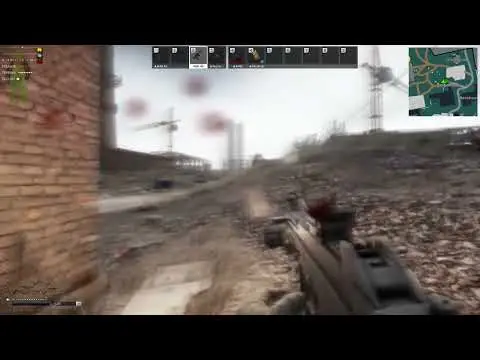

Mod
Get Concussed
- Downloads
- 4,886
- Favourites
- 0
Showcase

Overview
Headshots will trigger the concussion/tinnitus effects if the bullet is blocked by helmet armor.
Like Live EFT, tinnitus will only occur if you do not have a headset equipped.
Install
Extract directly into the SPT folder. The plugin can be located in BepInEx/plugins/.
Background
Concussions/tinnitus caused by gunshots to the helmet are currently not working. This mod restores the effect, for concussion lovers like myself.
Configuration
Hit F12 to configure concussion duration and concussion strength (default: 0.75 strength and 5 seconds duration), as well as turning tinnitus on/off.
Version
1.0.2
SPT ~3.10.0
Fika: unknown
3,297 downloadsUnknown size
Updated for SPT 3.10
VirusTotal: report 1
Version
1.0.1
SPT 3.9.8
Fika: unknown
1,245 downloadsUnknown size
LAST UPDATE FOR 3.9.8
- Adds configuration options in F12 for concussion duration and concussion strength (default: 0.75 strength and 5 seconds duration), and turning tinnitus on/off
- Fixes the bug where the concussion effect does not occur after armor takes damage on the helmet. This should fix most of the issues where helmets/additional helmet armor block damage but no concussion effect happens.
VirusTotal: report 1